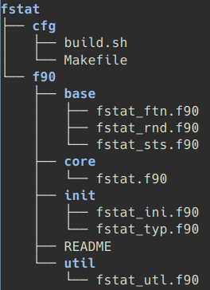

![]()
I’m happy to announce the first official release of FSML (Fortran Statistics and Machine Learning). It is a Modern Fortran toolkit for statistics and machine learning (ML), suitable for contemporary research problems and teaching. Here, I expand on what I’ve written for the corresponding paper (Mutz 2025) in the Journal of Open Source Software. I provide more context for the library (or “package”), explain some of the design choices, and share some thoughts on where I see its role (or niche) in the Fortran software ecosystem, empirical research, and teaching. The code is hosted on GitHub and the html documentation can be found on fsml.mutz.science.
Statistics, Machine Learning, and Fortran
Over the past two decades, rapid advances in computing technology have significantly broadened the practical applications of statistics and enabled the widespread adoption of machine learning (ML) and techniques from the discipline of artificial intelligence (AI) in general. These developments have also transformed research methods and improved predictive modelling across many fields (e.g., Boateng and Mutz 2023; Lang et al. 2024). Although Fortran has a long history in ML and data-driven modelling (e.g., Breiman 2001; Tomassetti, Verdecchia, and Giorgi 2009; Gutmann et al. 2022) and naturally lends itself to this purpose as a reliable, high-performing language with excellent array functionality and intuitive syntax for mathematical applications, it has not been as widely adopted for statistics and ML as Python or R. Below, I briefly explore some of the opportunities and challenges of using Fortran in this discipline.
Why Fortran?
I often feel that many domain-specific advantages of Fortran over other languages have been discussed ad nauseam. However, whenever I leave my Fortran bubble, I quickly notice the widespread lack of knowledge about the language and its features, so I will briefly make a few points here:
High-performance: Fortran is designed to handle computationally intensive tasks and often adopted for high-performance computing and numerical modelling in the sciences (e.g., Giorgetta et al. 2018). This includes battle-tested older code, as well as new models written from scratch in Modern Fortran. Related to this, static and strong typing allows compilers to catch errors early, make optimisations, and generate extremely efficient binary code.
Mature and well supported: Fortran is a mature and reliable general purpose programming language with great compiler support. There are multiple open-source Fortran compilers like the well-established GFortran and new LLVM-based LFortran and Flang.
Mathematically intuitive: Fortran (from FORmula TRANslator) was designed to translate mathematics to performant code. It comes with excellent array functionality and does not rely on external libraries for this (as languages like Python do). The mathematical basics are contained in the language.
Energy-efficient: Fortran is more energy-efficient than other high-level programming languages (Pereira et al. 2021). This is a factor that users may want to explore, esp. as the widespread adoption of computationally intensive methods increases electricity consumption (Jia 2024), adds more stress on Earth’s climate and environments, and creates new challenges as a consequence (e.g., Dodge et al. 2022; Freitag et al. 2021).
Easy to learn: This may surprise a few. Due to the previous lack of modern tooling, online resources, and interactively (i.e. points currently addressed by the community), you faced barriers in learning Fortran that you didn’t face with other popular languages. However, the language itself is fairly small and easy to learn, and the growing Modern ecosystem and community is slowly but surely removing these barriers.
FORTRAN ≠ Fortran ≠ Fortran-lang Fortran
The slow adoption of Fortran in general can be attributed to a number of factors that are summarised nicely by Kedward et al. (2022). Among them are 1) an unfamiliarity of Modern Fortran features, 2) a lack of modern tooling, and 3) a modest online presence and community. I caught myself nodding a lot when reading this paper. I’ve been using Fortran for over 17 years, supervised students using Fortran, and frequently talked to colleagues about their gripes with the language. Most issues aren’t with the language itself, but with the lack of modern tooling and convenient online resources (points 2 and 3). Without these, more time needs to be invested to produce the same research results – time that students and (early career) researchers don’t have in modern academia. Gripes with the language itself typically involve complaints about (old) FORTRAN and supposedly missing features that have been part of standard (modern) Fortran for over two decades (point 1). It’s easy to understand an aversion if your experience with the language is limited to FORTRAN, of course. To demonstrate:
FORTAN (old)
PROGRAM F77_SUM
C FORTRAN code
INTEGER I, FSUM
FSUM = 0
I = 1
10 CONTINUE
FSUM = FSUM + I
IF (I .GE. 10) GOTO 20
I = I + 1
GOTO 10
20 CONTINUE
PRINT *, 'Sum (1 to 10) =', FSUM
ENDFortran (modern)
program f90_sum
! Fortran code
implicit none
integer :: i, fsum
fsum = 0
do i = 1, 10
fsum = fsum + i
enddo
print*, 'Sum (1 to 10) =', fsum
end program f90_sumI have worked with FORTRAN and am happy to leave it behind and not look back (unless I’m feeling nostalgic). So when faced with complaints about FORTRAN-specifics, I make the point that FORTRAN ≠ Fortran.
Points 1-3 are now being addressed by Fortran-lang community projects like the de facto standard library (stdlib), the Fortran Package Manager (fpm), the LLVM-based interactive compiler LFortran, the new Fortran-lang website, and Fortran Discourse. A lot has changed over the past 5 years, and I can now point students and colleagues to a great selection of fpm packages, online tutorials, an LFortran playground to try out the language, and a helpful community. It’s also worth noting that the timing of these efforts coincides with the rise in Fortran’s TIOBE-index rankings, where it currently sits comfortably in the top 20. Although a lot of work is still needed to make Fortran as accessible as other popular languages, I can now – in good conscience – recommend Fortran to students and early career researchers again. Students have reported very positive experiences back to me. This includes students with little coding experience, students with knowledge of C++, and students who had only worked with higher level languages like Python. This had not been the case prior to these community efforts. Even though these efforts don’t directly change the language itself, they significantly improve the experience for Fortran users – so much so that I think it’s fair to say that Fortran ≠ Fortran-lang Fortran.
The Fortran statistics and ML ecosystem
The slow adoption of Fortran for statistics and ML can probably be attributed to a relatively small software ecosystem for these applications. Recently, projects like Neural-Fortran (Curcic 2019), ATHENA (Taylor 2024), FTorch (Atkinson et al. 2025), FastGPT, and FStats have significantly enriched that ecosystem. Nevertheless, it remains relatively small and patchy. FSML was created to occupy another niche as a well-documented library for statistics and classic ML, to create a richer ecosystem and make Fortran a more attractive choice for empirical analysis and modelling. Furthermore, it was made suitable for teachers, students and early career researchers to promote the adoption of Fortran at universities.
Package Scope
Current coverage (FSML v0.1.0)
FSML v0.1.0 covers a range of statistics and ML procedures that are subdivided into five categories. These are also used for module and procedure naming conventions in the code, so if you are interested in exploring the code, you will recognise these:

DST: Statistical distribution functions (e.g., the probability density, cumulative distribution, and quantile functions of the Student’s t distribution, generalised Pareto distribution and more).STS: Basic statistics for describing and understanding data (e.g., mean, variance, correlation).TST: Parametric and non-parametric hypothesis tests (e.g., analysis of variance, Mann–Whitney U).LIN: Procedures relying heavily on linear algebra (e.g., principal component analysis, ridge regression, linear discrimination).NLP: Non-linear and algorithmic procedures (e.g., k-means clustering).
Interfaces with the prefix fsml_ are part of the public interface, accessed through use fsml. A comprehensive list of currently covered procedures can be found in the API Reference.
The library has minimal requirements.
- Modern standard: It uses Fortran 2008 features.
- Depdencies: The standard library (
stdlib) for linear algebra. - Building and distributing: The Fortran Package Manager (
fpm). - Compilers:
GFortranorLFortran.
Currently, LFortran does not compile stdlib and therefore cannot be used.
Future expansion
A lot of the library consists of reworked and modernised research code of mine. I will continue to rewrite and merge my previous work with FSML, as well as add new methods as needed by users (if they fit the scope). This includes:
- Random Forests, Bayesian classifiers, Generalised Linear Models, Generalised Additive Models.
- Support for more statistical distributions, and multivariate Gaussian integrals.
- Model performance metrics (e.g., RMSE).
- Frameworks for model training and validation (e.g., subsampling and cross-validation).
- Procedures for reading, writing, and basic data processing.
Examples
FSML’s repository and Handbook includes examples for every public interface. The examples below demonstrate the use of FSML interfaces, using double precision (dp):
! Pearson correlation coefficient for vectors x1 and x2
pcc = fsml_pcc(x1, x2)
! generalised Pareto cumulative distribution function
! with modified shape (xi) and location (mu) parameters
fx = fsml_gpd_cdf(1.9_dp, xi=1.2_dp, mu=0.6_dp)
! two-sample t-test for unequal variances (Welch's t-test);
! returns test statistic (t), degrees of freedom (df), and p
call fsml_ttest_2sample(x1, x2, t, df, p, eq_var=.false.)
! one-way ANOVA on a rank-2 array (x2d);
! returns f-statistic (f), degrees of freedom (df1, df2) and p
call fsml_anova_1way(x2d, f, df1, df2, p)
! ridge regression for 100 data points, 5 variables, and lambda=0.2;
! returns y intercept (b0), regression coefficients (b), and R^2 (rsq)
call fsml_ridge(x, y, 100, 5, 0.2_dp, b0, b, rsq)Development Notes
Project Background
In the early 2010s, I moved a lot of the FORTRAN statistics procedures I wrote (and commonly used) into a single module. It kept growing and I eventually re-implemented it in Modern Fortran, organised it into several modules, started using LAPACK for linear algebra, wrote a Makefile for it, and started using it as a “proper” library. By ~2015, the then-called fstat library (not to be confused with the actively developed FStats) included many of the statistical procedures now found in FSML, as well as a number of ML procedures for Bayesian learning, Random Forests, and clustering. It wasn’t perfect, but served its purpose (e.g., Mutz, Paeth, and Winkler 2016; Mutz and Ehlers 2019)

When I saw the growing online community and visible interest in all things Fortran, I thought it a good idea to open up my research toolbox, rewrite and improve some of the code, document it well, and share it with the community. I took this opportunity to also change some conventions in my code (e.g., for precision handling, pure procedures, and use of intrinsics). At the same time, I discovered fpm, stdlib and LFortran and decided to take these into consideration when rewriting my code. So stdlib’s linear algebra interfaces replaced standalone LAPACK, fpm replaced the Makefile for building, and FSML is developed to support compilation with LFortran – being able to use statistics and ML procedures interactively in Jupyter notebooks would sure make Fortran more accessible to students and early career researchers (but more on that later). There is still some code I have not yet rewritten and included (and then there is more code not related to statistics and ML that may be worth sharing).
Keep it simple, stupid! (KISS)
FSML is kept fairly simple in the KISS sense. Unnecessary complexity and over-engineering of features are avoided, the code is kept clear, the number of dependencies is kept to a minimum, and only standard language features are used. Simplicity in design and implementation makes it easier to understand, maintain, and debug. Coupled with its extensive documentation and style guide, it should be relatively easy for students and potential contributors to dive into the code.
Parallel execution: pure and elemental
Most statistical and ML procedures are implemented as pure procedures (recognisable also by the _core suffix in the procedure name) with impure wrappers that handle input arguments and provide user feedback where needed. Some notes on that below:
- The standard interface (accessible through
use fsml) exposes only the safe wrapper procedures (e.g.,fsml_anova_1way). However, thepureprocedures can be used by importing them directly from their respective modules (e.g.,use fsml_tst, only: anova_1way => s_tst_anova_1w_core). - There are several advantages to
pureprocedures. It keeps all the “work” (mathematical calculations) in smaller, more understandable procedures. These procedures have no side effect and can therefore be easily parallelised and used indo concurrentloops. FSMLprocedures that only have scalar value arguments and results are declaredelementalprocedures. These may be invoked with arrays and simplify parallel execution.
Below are minimalist demonstrations of using pure and elemental procedures.
Pure procedure in do concurrent loop.
program pure_fsml
! Computes correlation coefficients for 5 vector pairs.
use :: iso_fortran_env, dp => real64
use :: fsml_sts, only: corr => f_sts_pcc_core
implicit none
! our variables
integer :: i
real(dp) :: x1(10,5), x2(10,5) ! data (5 vectors each holding 10 values)
real(dp) :: pcc(5) ! corelation coefficients
! generate data
call random_seed()
call random_number(x1)
call random_number(x2)
! pure procedure in do concurrent loop
do concurrent (i=1:5)
pcc(i) = corr(x1(:,i), x2(:,i))
enddo
print*, pcc
end program pure_fsmlElemental procedure demonstration.
program elemental_fsml
! Computes normal pdf for data vector.
use :: iso_fortran_env, dp => real64
use :: fsml_dst, only: norm_pdf_elemental => f_dst_norm_pdf_core
implicit none
! our variables
integer :: i
real(dp) :: x(10) ! data
real(dp) :: p(10) ! probabilities (results)
! generate data
call random_seed()
call random_number(x)
! use elemental function; pass mu (0) and sigma (1)
p = norm_pdf_elemental(x, 0.0_dp, 1.0_dp)
print*, p
end program elemental_fsmlFamiliar and accessible
The API (Application Programming Interface) is kept similar to that of other statistics and ML libraries (e.g., scipy), so it will feel familiar to those who used popular R or Python packages, for example. That’s intentional and meant to lower the barrier to explore Fortran for such tasks. Furthermore, the user Handbook includes a short tutorial, a contributor’s guide, and example-rich API documentation (with detailed descriptions of the methods) to make the library more accessible.
Suitable for teaching and research
I think the suitability of FSML for research needs no further comments, since it evolved from a toolbox used for (peer-reviewed) research. Instead, I’ll focus on its suitability for students and researchers with limited coding experience.
In one of his blog posts (Loiseau 2025), Jean-Christophe Loiseau compares Fortran to Python for teaching linear algebra. His experience with the pitfalls of using the latter (0-based indexing, strict indentation rules, and relying on external packages for basic linear algebra) also matches my ~10 years of experience teaching scientific coding. In addition, students need time to internalise the practical implications of data types. Implicit typing, as is normal for Python, hides the concepts of data types, delays internalisation, and results in puzzling over type-related messages many weeks into the courses. In these matters, Fortran certainly has a pedagogical advantage. However, the big downside of using any compiled language in teaching is the lack of interactivity.
Conventional wisdom puts common research needs (performance and speed) at odds with teaching needs (interactivity). However, languages like Julia and compilers like Cling (C++) and LFortran challenge this. Citing from the blog post Why We Created LFortran (Čertík, Brady, and Swart 2019):
One approach is to take a language like Python and try to make it as fast as possible, while preserving the interactivity and ease of use. One is forced to modify the language a bit so that the compiler can reason about types. That is the approach that Julia took.
The other approach is to take our current compiled production languages: C++ and Fortran and try to see how interactive one can make them without sacrificing speed (i.e., without modifying the language). […] The Fortran language when used interactively (e.g., in a Jupyter notebook) allows similar look and feel as Python or MATLAB, enabling rapid prototyping and exploratory workflow. The same code however offers superior performance when compiled with a good mature compiler, such as the Intel Fortran compiler, because it is just Fortran after all.
FSML is developed to support compilation with LFortran. Since the library keeps everything in simple and standard Fortran, this is fairly easy (from my end), provided that the dependency stdlib compiles. Using the library with LFortran allows educators to leverage the pedagogical advantages of Fortran without sacrificing interactivity. The design consideration should also help (early career) researchers with limited coding experience, as well as researchers who prefer to work in Jupyter notebooks.
Community
FSML is developed with the community in mind. A healthy (online) presence and community is important for any programming language. In context of Fortran, that’s a point also made by (Kedward et al. 2022) and addressed by the creation of the new Fortran-lang website and Fortran Discourse. I recently came across the following on the docs pages of the PIC project by Jorge Luis Gálvez Vallejo), which demonstrates this well:
“I found a community of people that I hadn’t found in the C/C++ world and this drove me to start exploring the language a bit more.” (Jorge Luis Gálvez Vallejo, 2025)
Furthermore, as mentioned earlier, community projects like the Fortran-lang standard library (stdlib), the Fortran Package Manager (fpm), and the LLVM-based compiler LFortran address the need for modern tools.
FSML is developed with consideration (and integration) of these community projects:
- The de facto standard library
stdlibis used for for linear algebra. It is the only external library used in the project’s source code. - The package manager
fpmis used for building and distributing the project as an fpm package. - The project is developed to support compilation with
LFortranin addition to theGFortran. - The code is MIT-licenced, making it compatible with Fortran-lang projects.
Contributing and Support
Support for the project is always welcome. This can come in various shapes and sizes:
- Trying
FSMLfor your research or statistics/ML class. - Report a bug or make a suggestion.
- Contribute code.
- Let your fellow Fortran and statistics/ML enthusiasts know about the library. 🙂
If you’re interested in contributing code, reading the contributor guidelines and code of conduct are good places to start. These are very similar to the guidelines of Fortran-lang projects. In the contributor guidelines, you’ll also find notes on how to report a bug or make a suggestion.
Herbert Peck
There is no reason to mention Herbert in this post other than the fact he is acknowledged in the JOSS paper (Mutz 2025) and always seems relevant to everything. He is – by far – the smartest, proudest, and most glorious pigeon I’ve ever had the privilege of knowing, and his fame is ever-increasing.
“Yes, I’m aware of the legend Herbert.” (Syed Danish Ali, July 2025)